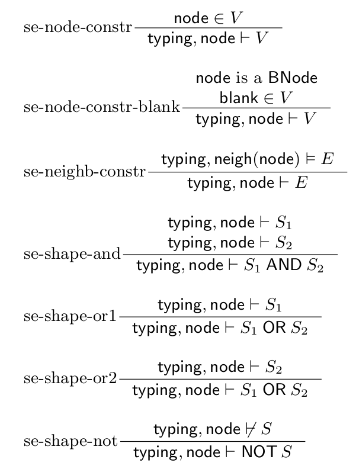

The Shapes Language
A shapes schema defines a set of named constraints, called shapes. The name of a shape is also called shape label.
Shapes Schema
A shapes schema
-
SLabels is a set of shape labels, -
def is a definition function that with every shape label associates a shape expression.
The structure of a shapes schema is captured by the following abstract syntax.
Typing of a Graph by a Shapes Schema
A typing is a set of node-label associations of the form
Formally, let
Consider a shapes schema
An example of a typing of the graph
-
typing = { (inst:Issue1, <IssueShape>), (inst:User2, <UserShape>), (inst:User2, <EmployeeShape>) }
Shape Expressions
The
Abstract Syntax
A shape expression is a Boolean combination of two kinds of atomic components:
-
a node constraint (
NodeConstraint ) that defines the set of allowed values of a node. In shapes schemas, a node constraint can be an arbitrary set that contains IRIs or RDFLiteral, or the special valueblank that stands for any BNode. In practice (in the concrete syntax), a node constraint can be defined using different ways of restraining the type of a node: string facet, numeric facet, node kind, a stem [TODO: reference to the concrete syntax]. -
a neighbourhood constraint (
NeighbourhoodConstraint ) that defines a constraint on the allowed neighbourhood of a node, that is, the allowed triples that contain this node as subject or object. A neighbourhood constraint is itself defined as a (TripleExpression ).
Let
-
U = { ex:unassigned, ex:assigned, ex:unknown } -
V = { 1, 2, 5 } -
int the set of all integer values
Let
Examples of value expressions are
int AND (NOT V) U AND (E1 AND (NOT E2))
Semantics
The semantics of a shape expression is defined relative to a typing.
Let
-
V is aNodeConstraint (in the se-node-constr and se-node-constr-blank rules); -
E is aTripleExpression (in rule se-neighb-constr); - the ⊧ symbol in the premise of the se-neighb-constr rue the relation that defines whether the neighbourhood of a node matches a triple expression, and is defined below;
-
S ,S1 ,S2 areShapeExpression s; -
the
typing, node ⊬ S in the premise of the se-shape-not rule means that it is impossible to construct a proof fortyping, node ⊢ S .

Let
Whatever the value of
-
typing, 3 ⊢ int AND (NOT V)
If
-
typing, ex:assigned ⊬ U AND (E1 AND (NOT E2))
-
typing, ex:unknown ⊢ U AND (E1 AND (NOT E2T))
-
typing, ex:somenode ⊬ U AND (E1 AND (NOT E2))
Triple Expressions
Triple expressions are used for defining neighbourhood constraints within a shape expression.
Abstract syntax
A triple expression is matched by a set of triples that come from the neighbourhood of a node in an RDF graph.
An atomic triple expression can be
- the empty triple expression, that is matched only by an empty set of triples;
- a triple constraint, that is matched by a set containing a single triple. A triple constraint is composed of a set of properties or inverse properties, that define the allowed values for the predicate of a triple, as well as a shape label, that is a reference to shape expression to be satisfied by the node in the triple opposite to the focus node.
Triple expressions allow for two binary operators, the some-of operator, denoted
- A some-of triple expression is matched by a set of triples if one or the other of its sub-expressions is matched by that set of triples.
- An each-of triple expression is matched by a set of triples if that set can be split into two disjoint subsets such that one of the subsets matches the first sub-expression of the each-of expression, and the other subset matches the other sub-expression.
Finally, a triple expression can be repeated by specifying a minimal cardinality that is a natural number, and a maximal cardinality that is a natural number of an unbounded value denoted as a star
Moving the mouse over the elements of the list below will highlight the corresponding elements in the triple expression.
- triple constraint (
TripleConstraint ) - some-of triple expression (
SomeOfTripleExpr ) - each-of triple expression (
EachOfTripleExpr ) - repeated triple expression (
RepeatedTripleExpr ) - triple constraint with an inverse property
- triple constraint with a non-singleton co-finite set of properties
- shape reference (
ShapeRef )
# triple expression of the shapes language
{rdf:type} <SL_1> ;
{foaf:name} <SL_2> ;
( {foaf:mbox} <SL_3> {1;3} | {foaf:adress} <SL_3> ) ;
{^ex:leader} <SL_4> ;
C{rdf:type, foaf:name, foaf:givenName, foaf:familyName, foaf:mbox, ^ex:leader} <SL_all> *
Where C{rdf:type, foaf:name, foaf:givenName, foaf:familyName, foaf:mbox} = (Prop ∪ InvProp) \ {rdf:type, foaf:name, foaf:givenName, foaf:familyName, foaf:mbox}, that is, the complement of the set {rdf:type, foaf:name, foaf:givenName, foaf:familyName, foaf:mbox} within the set of all properties and inverse properties.
Semantics
A triple expression is matched by a set of triples and inverse triples.
In practice, the set will be obtained as the neighbourhood of some node in an RDF graph, or will be a subset of such neighbourhood.
Such set is composed of triples of the form
For a set of triples or inverse triples
-
in rule te-triple-constr,
P L is a triple constraint, withP a subset ofProp ∪ InvProp , andL a shape label inSLabels ; -
min andmax are the minimum, respectively maximum cardinality in aRepetedTripleExpr (in rule te-repet);

Example of matching a triple constraint.
# if typing is such that
(:n1, <SL_1>) belongs to typing
(:n2, <SL_2>) does not belong to typing
# then
typing, {(:n :p :n1)} ⊧ {:p} <SL_1>
typing, {(:n :p :n1)} ⊧ {:p, :q} <SL_1>
typing, {(:n :p :n2)} ⊭ {:p} <SL_2>
Examples of satisfying an each-of triple expression.
# if typing is such that it contains the following node-label associations
(:n1, <SL_1>), (:n2, <SL_2>), (:n3, <SL_1>)
# then
typing, {(:n :p :n1), (:n :p :n2)} ⊧ {:p} <SL_1> ; {:q} <SL_2>
typing, {(:n :p :n1), (:n :p :n3)} ⊧ {:p} <SL_1> ; {:p} <SL_1>
typing, {(:n :p :n1)} ⊭ {:p} <SL_1> ; {:p} <SL_1>
Examples of satisfying a some-of triple expression.
# if typing is such that it contains the following node-label associations
(:n1, <SL_1>), (:n2, <SL_2>), (:n3, <SL_1>)
# then
typing, {(:n :p :n1)} ⊧ {:p} <SL_1> | {:q} <SL_2>
typing, {(:n :p :n1), (:n :p :n2)} ⊭ {:p} <SL_1> | {:q} <SL_2>
Examples of satisfying a triple expression with some-of and each-of operators.
# if typing is such that it contains the following node-label associations
(:n1, <SL_1>), (:n2, <SL_2>), (:n3, <SL_1>)
# then
typing, {(:n :p :n1)} ⊧ {:p} <SL_1> | {:q} <SL_2>
typing, {(:n :p :n1), (:n :p :n2)} ⊭ {:p} <SL_1> | {:q} <SL_2>
Consider the following triple expression and RDF graph.
# graph G
ex:lp rdf:type foaf:Person;
foaf:name "Louisa Pavlova";
foaf:mbox "louisa@shex.org";
foaf:mbox "lpavlova@jobs.com";
ex:memberOf ex:gr2 .
ex:gr2 ex:leader ex:lp .
ex:bug ex:reportedBy ex:lp .
# typing is such that it contains the following node-label associations
(n, <SL_all>) for all node n in G
(foaf:Person, <SL_Person>)
("Louisa Pavlova", <SL_string>)
("louisa@shex.org", <SL_mbox_string>)
("lpavlova@jobs.com", <SL_mbox_string>)(ex:gr2, <SL_Group>)
# triple expression TExpr
{rdf:type} <SL_Person> ;
{foaf:name} <SL_string> ;
( {foaf:mbox} <SL_mbox_string> {1;3} | {foaf:adress} <SL_adr> ) ;
{^ex:leader} <SL_Group> ;
C{rdf:type, foaf:name, foaf:givenName, foaf:familyName, foaf:mbox, ^ex:leader} <SL_all> *
# neigh(G, ex:lp), the neighbourhood of ex:lp in G
ex:lp rdf:type foaf:Person .
ex:lp foaf:name "Louisa Pavlova" .
ex:lp foaf:mbox "louisa@shex.org" .
ex:lp foaf:mbox "lpavlova@jobs.com" .ex:lp ^ex:leader ex:gr2
ex:lp ex:memberOf ex:gr2
ex:lp ^ex:reportedBy ex:bug
Then typing, neigh(G, ex:lp) ⊢ TExpr. Move the mouse over the triples in neigh(G, ex:lp) to see which triples contribute to satisfy which of the sub-expressions of TExpr.